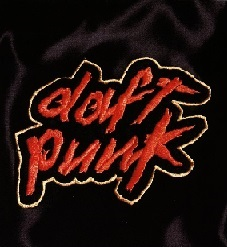
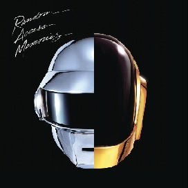
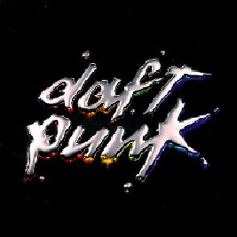

Daft Punk fue un dúo francés de french house formado por los DJ y productores Guy-Manuel de Homem-Christo y Thomas Bangalter. Daft Punk alcanzó una gran popularidad dentro del house a mediados de los años 90 en Francia y continuó con su éxito los años siguientes.
A continuación se muestran algunas de mis canciones favoritas:
CANCIÓN
ALBÚM
AUDIO
Around the World
Homework

Instant Crush

Random Access Memories
One more time
Discovery

Este es uno de mis videos favoritos, la historia que cuenta es divertida y alucinante: